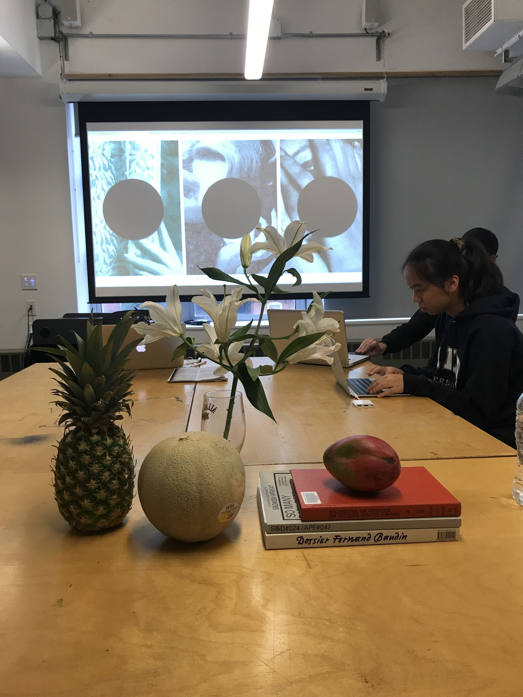

Coding from Life
- 
-
INSTRUCTIONS
1. Download the starter kit.
2. Complete two drawings, approximately 1 hour each.
OVERVIEW
You will “draw” a still life using HTML elements and a creative use of CSS. The elements in your still life will be positioned within a frame using absolute and relative positioning.
You will complete two drawings. Each drawing will take approximately 1 hour.
You will likely need to alter the z-index of elements if you want items to overlap.
You can create round borders using border-radius, and control each corner’s radius individually with boreder-radius-top-left, border-radius-bottom-left, etc.
You may need to rotate elements by using the transform property.
Be liberal with simplifying objects and using a flat aesthetic. Don’t get hung up on details unless you have time!
Consider using an interesting background color for your frame.
Remember that all of your styles should be placed within the main.css file. Don’t use inline styles in your HTML. Don’t mix the structure of your page with the appearance!
HOMEWORK
Create an archive of all the drawings completed in class, both your own drawings and the two drawings from each other student. You can find each project from the students page, in their github repos.
Store this archive in the your github projects directory, at this path projects/coding-from-life-archive. Your archives should consist of a index.html and main.css, just like the Coding from Life sketches in the starter kit.
Your archives should link to each drawing directly. For example, if I had created a drawing, you would link to http://ericnylund.github.io/projects/coding-from-life/sketch-1/index.html.
You should consider how you choose to organize the drawings. Is it alphabetically, chronologically, by color, random?
You should consider how you display the drawings. Is it with an image of the sketch, or a more abstract representation of the sketch, or just text?
Once your archive is complete and correctly linked to each student’s sketch, add a new link to your github pages home page page linking to the archive, and to your two sketches.
RESOURCES